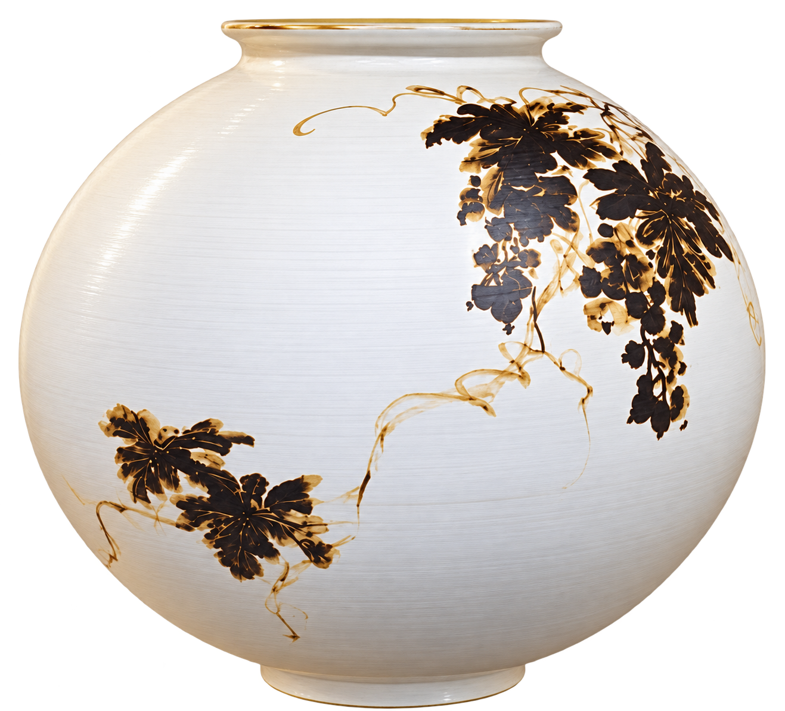
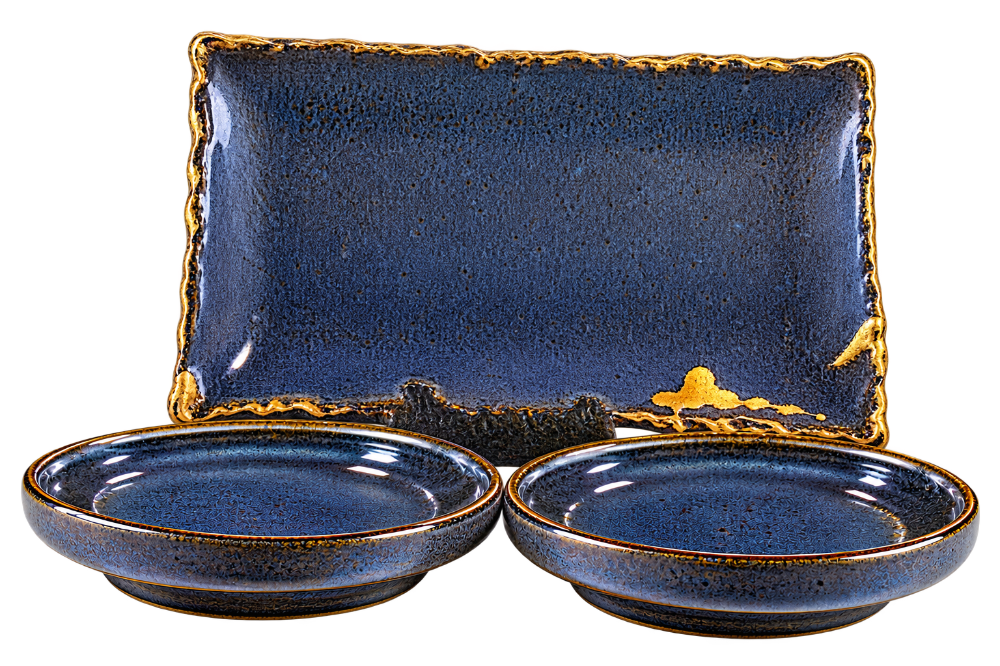
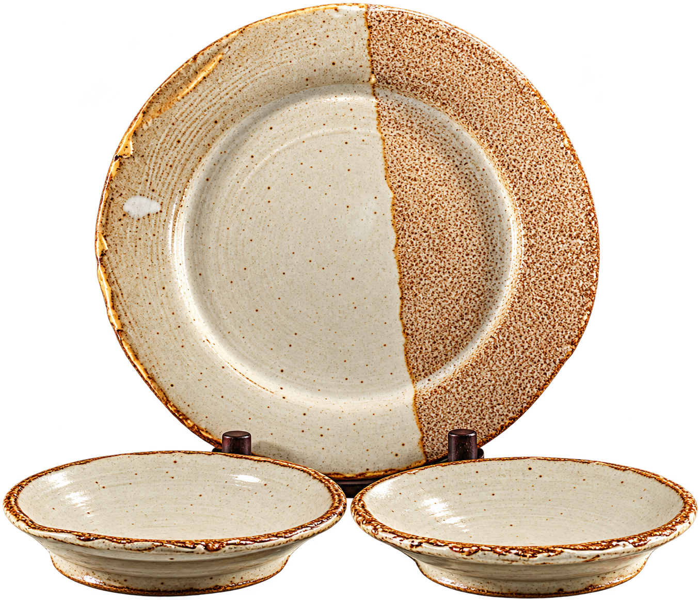
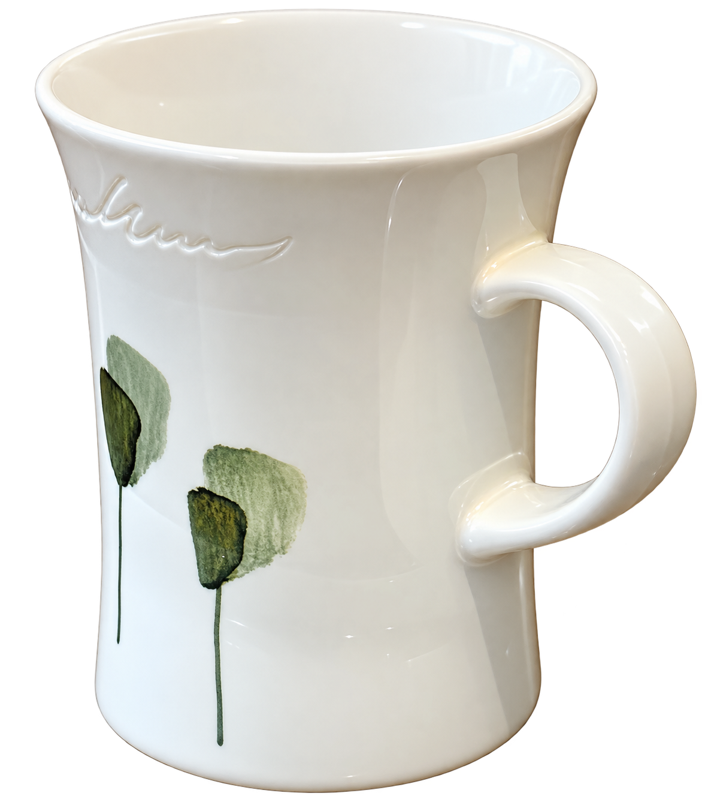
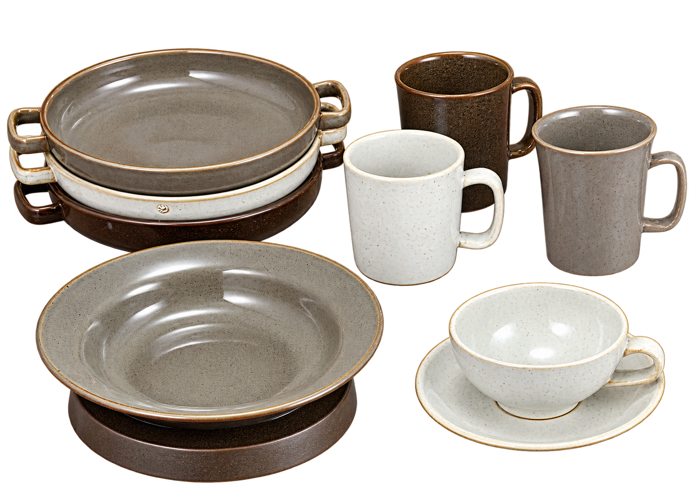
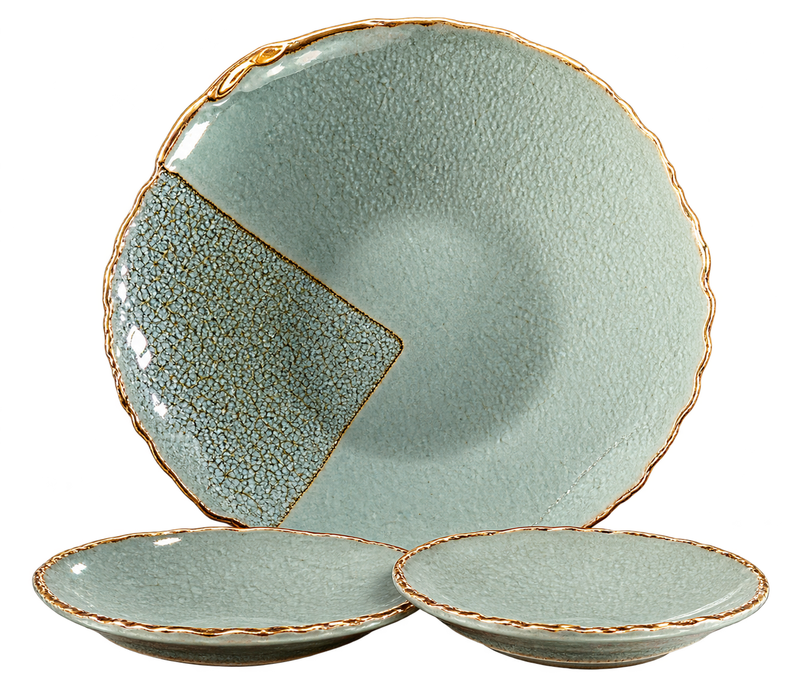

05 / KOREAN TRADITIONAL CERAMICS
The quiet
majesty of
earth & fire.
White porcelain. Expressive glazes.
Objects to live with, and to treasure.

Touch the piece. Let the earth unfold.
THE BEAUTY OF RESTRAINT
A full moon.
A clear intention.
A lasting presence.
A beautiful ceramic does not need to speak loudly. Its presence changes the rhythm of a room.
Korea’s white porcelain tradition finds a particularly graceful expression in the moon jar: a rounded, luminous form associated with the Joseon period. Its quiet character continues to inspire a love of simplicity and thoughtful craft.
For Neipclova, this beauty begins with respect for the earth and the maker. Carefully considered clay, patient hands and a clear creative intention are the values we celebrate.
Our collection brings that spirit into display pieces and the objects we gather around every day.
Explore moon-jar heritage · National Museum of Korea
FOR SPACES WITH CHARACTER
Beauty that
belongs in
your world.
A sculptural vessel for a quiet room. A considered ensemble for a table. A distinctive piece for an exhibition or a personal gift.
Explore the photographs, choose the forms that speak to you, and let us discuss the right selection for your setting.
View all 14 collection photographsTHE COMPLETE COLLECTION
Fourteen photographs.
Many ways to belong.
Explore the complete collection, from expressive moon jars to thoughtfully composed tableware. Ensembles remain together so you can see each grouping.
Showing 14 collection photographs
View PieceGrey Moon Jar
A luminous rounded silhouette, with a softly grey-toned surface and a quiet presence.
Price on request View Piece
View PieceTeal & Crimson Jar
A rounded vessel with teal tones and expressive crimson accents.
Price on request View Piece
View PieceRose-Toned Jar
A softly rounded form, with rose tones flowing into a deeper base.
Price on request View Piece
View PieceBlue & Crimson Jar
Blue-grey tones meet vertical crimson markings across a rounded vessel.
Price on requestBotanical White Jar
A white ground carries a dark botanical composition and warm accents.
Price on request View Piece
View PieceMidnight Blue Serving Ensemble
An elongated blue presentation piece accompanied by smaller vessels.
Price on request View Piece
View PieceWhite & Black Covered Pair
A contrasting pair of covered pieces on coordinating plates.
Price on request View Piece
View PieceOlive-Glazed Teapot
A rounded teapot with a sculpted lid, curved handle and warm detailing.
Price on request
View PieceDeep Blue Serving Set
A rectangular blue serving piece with two smaller coordinating dishes.
Price on request
View PieceEarth-Toned Plate Set
A broad earth-toned plate shown with two smaller coordinating dishes.
Price on request
View PieceBotanical White Mug
A tall white mug with a handle and a botanical surface design.
Price on request View Piece
View PieceCharcoal Serving Bowl
A deep, rounded grey bowl with handles at its rim.
Price on request
View PieceEveryday Tableware Ensemble
A coordinated assortment of bowls, handled vessels, mugs and a cup with saucer.
Price on request
View PieceCeladon-Toned Plate Set
A green-toned plate shown with two smaller coordinating dishes.
Price on requestCollection names describe the photographs. Dimensions, ceramic composition, maker, finish and current availability are confirmed individually when you inquire.
THE NEIPCLOVA PERSPECTIVE
Traditional beauty.
A personal
Neipclova touch.
We explore special treatment for selected ceramics as part of the Neipclova approach to everyday experience.
Neipclova’s vision is to bring a sense of positive energy to the objects people live with. Details of our proprietary approach are discussed individually; treatment options and suitability must be confirmed for the piece you select.
Here, “positive energy” expresses our brand philosophy and an intended personal experience. It is not a claim of proven medical or therapeutic benefit. The clay-powder waves on this site are a visual expression of earth and craft.
For vessels intended to contact food or drink, we will confirm applicable use, care and treatment information before a purchase is arranged.
Ask about the Neipclova approachA PERSONAL CONVERSATION
A piece you love.
A quotation made for you.
Tell us which piece or ensemble you are interested in, your quantity and delivery destination. We welcome quotation inquiries and will confirm availability, specifications, treatment options and delivery arrangements with you.
hyeon@neipclova.com